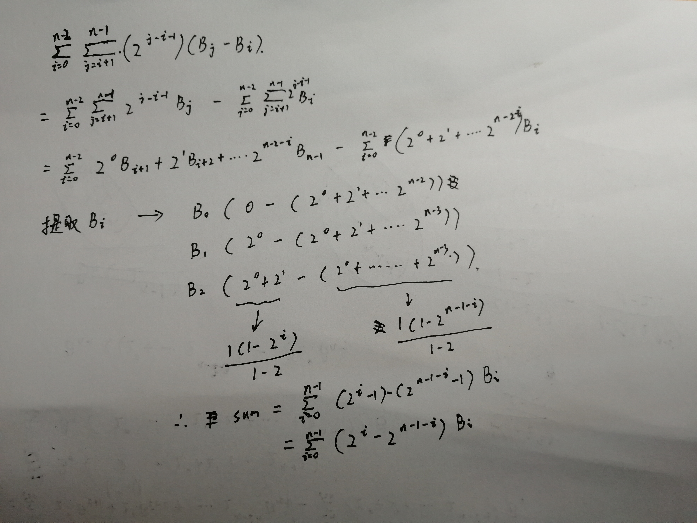

题目记录
题51.八皇后问题
解题思路：
可以理解为一个坐标系，0，0是原点，N*N里面的每个点有两个函数，斜率分别是1，-1，（y=-x+b, y=-x+b）xy_sum中记录的是y=x+b里面的b xy_dif记录的是y=-x+b里面的b 如果之后的点里面有相同的元素在这两个列表里面就说明在这条线上已经有另一个皇后在了。
代码
1 | class Solution: |
题49.字母异位词分组
python中的集合操作符
S | T 返回一个新的集合，包括在集合S和T的所有元素
S - T 返回一个新集合，包括在集合S但不在T中的元素
S & T 返回一个新集合，包括同时在集合S和T中的元素
S ^ T 返回一个新集合， 包括集合S和T中非相同元素
S <= T 或 S < T 返回True/False， 判断S和T的子集关系
S >= T 或 S > T 返回True/False， 判断S和T的包括关系
解法：
1 | #方法1 |
题891. 子序列宽度之和

知识点
快慢指针
快慢指针法判断循环：快指针每次前进2步，慢指针每次1步，如果快指针指向None表示不存在循环，如果慢指针追上快指针，表示存在循环。
异或操作
按位进行异或操作的性质：
- 如果a、b两个值不相同，则异或结果为1(不同的位为1)。如果a、b两个值相同，异或结果为0（这里假设a、b 只能包含 1、0 两值，但别忘了，每个比特恰好是表示零和一的。也可以这么说：真 xor 假 = 真；真 xor 真 = 假；假 xor 假 = 假）。
- 满足交换律。
即：
有a、b不等两值
a xor a = 0
b xor 0 = b
所以：(a xor a) xor b = a xor b xor a = b xor 0 = b
二分查找
(1)传统二分法查找的问题
mid = (left+right)//2如果left和right较大，可能会出现溢出问题
为了避免溢出应当写为mid=left+(right-left)//2
更好的写法是mid=(left+right)>>>1无符号右移，在python中不存在无符号右移
(2)避免边界问题
传统写法while(left<=right)需要考虑退出循环时返回的是left还是right
注意事项
- 考虑左右边界，如果target不在目标数组的范围内，则会报错
- 当数组元素个数是偶数个时，存在左中位数和右中位数；当数组元素个数是奇数时，则只存在确定的中位数。
分治法
在计算机科学中，分治法是建基于多项分支递归的一种很重要的算法范式。字面上的解释是“分而治之”，就是把一个复杂的问题分成两个或更多的相同或相似的子问题，直到最后子问题可以简单的直接求解，原问题的解即子问题的解的合并。 这个技巧是很多高效算法的基础，如排序算法、傅立叶变换。
贪心法
贪心算法（英語：greedy algorithm），又称贪婪算法，是一种在每一步选择中都采取在当前状态下最好或最优（即最有利）的选择，从而希望导致结果是最好或最优的算法。 比如在旅行推销员问题中，如果旅行员每次都选择最近的城市，那这就是一种贪心算法。
回溯算法
回溯算法实际上一个类似枚举的搜索尝试过程，主要是在搜索尝试过程中寻找问题的解，当发现已不满足求解条件时，就“回溯”返回，尝试别的路径。回溯法是一种选优搜索法，按选优条件向前搜索，以达到目标。但当探索到某一步时，发现原先选择并不优或达不到目标，就退回一步重新选择，这种走不通就退回再走的技术为回溯法，而满足回溯条件的某个状态的点称为“回溯点”。许多复杂的，规模较大的问题都可以使用回溯法，有“通用解题方法”的美称。
python中的操作
python中sort的实现算法timsort
https://www.cnblogs.com/clement-jiao/p/9243066.html#_label1
python中哈希表的时间复杂符
散列表（Hash table，也叫哈希表），是根据关键码值(Key value)而直接进行访问的数据结构。也就是说，它通过把关键码值映射到表中一个位置来访问记录，以加快查找的速度。这个映射函数叫做散列函数，存放记录的数组叫做散列表。
若关键字为k，则其值存放在f(k)的存储位置上。由此，不需比较便可直接取得所查记录。称这个对应关系f为散列函数，按这个思想建立的表为散列表。
python中的位操作
1 | x << y |
python中的无穷大
python中不存在直接的无穷大表示，但可以通过float('inf')来创建，可以使用isinf()来验证
python中生成器和迭代器的联合使用
1 | yield from generator |
python中的字符编码
1 | ord("A") #将A转换为整数 |